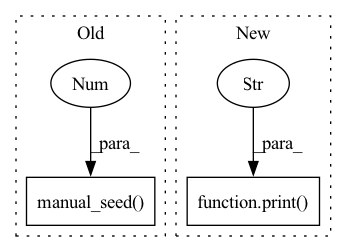

Pattern ID :37117
Before Change
device = torch.device("cuda:0" if torch.cuda.is_available() else "cpu")
torch.manual_seed(7 ) // for reproductibility
transform = torchvision.transforms.Compose(
[torchvision.transforms.functional.to_grayscale,After Change
stat_walsh(dataloaders["train"], device, stat_root)
time_elapsed = (time.perf_counter() - time_start)
print(f"Computed in {time_elapsed} seconds" )
def data_loaders_ImageNet(train_root, val_root=None, img_size=64,
batch_size=512, seed=7, shuffle=False):
In pattern: SUPERPATTERN
Frequency: 3
Non-data size: 2
Instances Fragment ID: 106523493
Project Name: openspyrit/spyrit
Commit Name: e7bbc4532d2c724d25c7f87a00096719fc9c56cd
Time: 2022-09-06
Author: nicolas.ducros@insa-lyon.fr
File Name: spyrit/misc/statistics.py
M Class Name: AnonimousClass
N Class Name: AnonimousClass
M Method Name: stat_walsh_stl10(5)
N Method Name: stat_walsh_stl10(4)
M Parent Class:
N Parent Class:
M File Name: spyrit/misc/statistics.py
N File Name: spyrit/misc/statistics.py
M Start Line: 495
M End Line: 519
N Start Line: 38
N End Line: 60
Before Change
Translate images using StarGAN trained on a single dataset.
layer_dict = {0: 2, 1: 5, 2: 8, 3: 9, 4: 10, 5: 11, 6: 12, 7: 13, 8: 14, 9: 17, 10: 20, 11: None}
torch.manual_seed(0 )
// for layer_num_orig in range(12):
// Load the trained generator.
self.restore_model(self.test_iters)After Change
// 11 layers + output
// layer_num_orig = 11
print("Layer" , layer_num_orig)
for i, (x_real, c_org) in enumerate(data_loader):
// Black image
black = np.zeros((1,3,256,256))
black = torch.FloatTensor(black).to(self.device) Fragment ID: 106523495
Project Name: natanielruiz/disrupting-deepfakes
Commit Name: 572a2bff955b18f76e8ba2cbc181036fed2f7b18
Time: 2019-12-24
Author: nruiz@Nataniels-MacBook-Pro.local
File Name: stargan/solver.py
M Class Name: Solver
N Class Name: Solver
M Method Name: test_attack(1)
N Method Name: test_attack(1)
M Parent Class: object
N Parent Class: object
M File Name: stargan/solver.py
N File Name: stargan/solver.py
M Start Line: 576
M End Line: 655
N Start Line: 660
N End Line: 743
Before Change
):
//device = torch.device("cuda:0" if torch.cuda.is_available() else "cpu")
torch.manual_seed(7 ) // for reproductibility
//
transform = torchvision.transforms.Compose(After Change
stat_walsh(dataloaders["train"], device, stat_root, n_loop)
time_elapsed = (time.perf_counter() - time_start)
print(f"Computed in {time_elapsed} seconds" )
def stat_walsh_stl10(stat_root = Path("./stats/"),
data_root = Path("./data/"),
img_size = 64, Fragment ID: 106523494
Project Name: openspyrit/spyrit
Commit Name: e7bbc4532d2c724d25c7f87a00096719fc9c56cd
Time: 2022-09-06
Author: nicolas.ducros@insa-lyon.fr
File Name: spyrit/misc/statistics.py
M Class Name: AnonimousClass
N Class Name: AnonimousClass
M Method Name: stat_walsh_ImageNet(6)
N Method Name: stat_walsh_ImageNet(6)
M Parent Class:
N Parent Class:
M File Name: spyrit/misc/statistics.py
N File Name: spyrit/misc/statistics.py
M Start Line: 466
M End Line: 489
N Start Line: 24
N End Line: 32